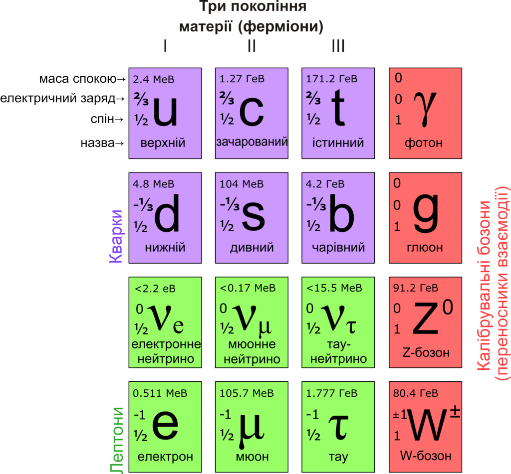

Стандартна модель є теоретичною основою опису всіх відомих на сьогодні елементарних частинок. У цій моделі кварки мають шість різних ароматів: верхній (u) (up), нижній (d) (down), дивний (s) (strange), чарівний (c) (charm), красивий (b) (beauty, bottom) і правдивий (топ-кварк) (t) (true, top). Античастинки кварків називають антикварками і позначають рискою над символом для відповідного кварка, наприклад u для верхнього антикварка. Як антиматерія в цілому, антикварки мають ту ж масу, середній час життя і спін як їхні відповідні кварки, але мають протилежний заряд.
Кварки є частинками зі спіном 1/2, отже, вони є ферміонами відповідно до теореми Паулі. Вони підпорядковуються принципу заборони Паулі, тобто, два однакові ферміони не можуть одночасно бути в одному й тому ж квантовому стані. Це відрізняє їх від бозонів (частинок з цілим спіном), будь-яка кількість яких може бути одночасно в одному й тому ж квантовому стані. На відміну від лептонів, кварки мають кольоровий заряд, який змушує їх брати участь в сильній взаємодії. Результуюче притягання між різними кварками спричиняє утворення складових частинок, відомих як адрони.
Кварки, які визначають квантові числа адронів називають валентними кварками; крім цього, будь-який адрон може містити необмежену кількість віртуальних кварків, антикварків і глюонів, які не впливають на його квантові числа. Існує два сімейства адронів: баріони, що складаються з трьох валентних кварків, і мезони — з одного кварка й одного антикварка. Найпоширенішими баріонами є протон і нейтрон, складові атомних ядер. На сьогодні уже відомо багато різних адронів, які в основному різняться вмістом кварків. Існування «екзотичних» адронів (із більшою кількістю валентних кварків), таких як тетракварк (qqqq) або пентакварк (qqqqq) припускається, але не доведено. Щоправда, 13 липня 2015 року в ЦЕРН повідомили про результати, які відповідають станам пентакварка.
Елементарні ферміони згруповані в три покоління, кожне з яких містить два лептони і два кварки. Перше покоління включає u-кварк і d-кварк, друге — s-кварк і c-кварк, третє — b-кварк і t-кварк. Пошуки четвертого покоління кварків і інших елементарних ферміонів зазнали невдачі, є непрямі докази того, що не існує більше трьох поколінь ферміонів. Частинки вищих поколінь як правило мають велику масу і є менш стабільними, що спричиняє їх розпад на частинки нижчого покоління через слабку взаємодію. Тільки кварки першого покоління трапляються в земних умовах. Важчі кварки можуть бути створені за допомогою високоенергетичних зіткнень і швидко розпадаються. Проте вважається, що вони існували в перші частки секунди після Великого вибуху, коли Всесвіт був дуже гарячий і густий (кваркова епоха). Важчі кварки досліджують у прискорювачах елементарних частинок.
Шість частинок в Стандартній Моделі — кварки.(позначені фіолетовим кольором) Маючи електричний заряд, масу, кольоровий заряд і аромат, кварки є частинками, що беруть участь у всіх чотирьох фундаментальних взаємодіях: електромагнітній, гравітаційній, сильній і слабкій.
